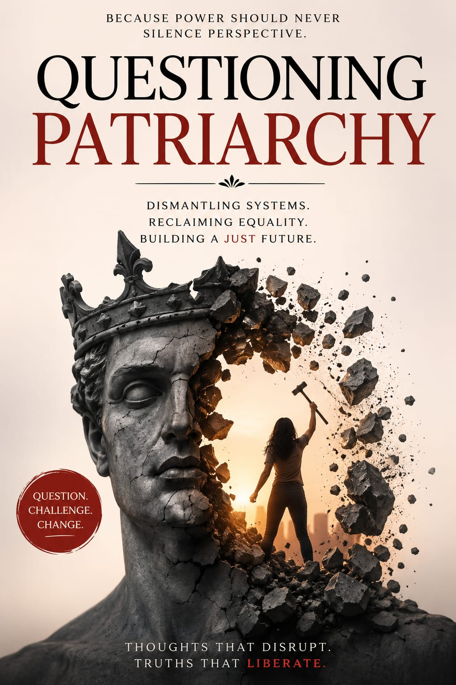

My portfolio in a heart beat
Biology first. Then code.Now, deliberately, toward AI for medicine.A work in progress — beating, steady, honest.
Divyanshi Dhingra · Portfolio 2026
Building
toward
AI + medicine.
I'm Divyanshi — a Published author working my way, deliberately, toward AI-driven medical simulation and surgical training tools. Early in the journey, and honest about it.
Biology, not computer science, came first
I came to CS from biology, not the other way around. My 11th and 12th were PCB — physics, chemistry, biology — and that grounding still shapes what I care about in tech.
BCA — currently in my 2nd year
Building the computer-science fundamentals I didn't inherit from a PCM background: programming, logic, and the applied math I'm actually strong in.
Published my first book while still a student
I'm an extrovert who loves debate, cooking, and drawing — but writing goes deepest. I published Questioning Patriarchy, a subject I felt needed a direct, unflinching treatment.
A timeline that keeps drawing itself.
PCB, 11th & 12th grade
Physics, chemistry, and biology — the foundation that still shapes what I'm drawn to in tech today.
BCA — currently in 2nd year
Building the computer-science fundamentals I didn't get from a PCM background: programming, logic, and the math I'm actually strong in.
Published Questioning Patriarchy
Wrote and published my first book, exploring a subject I felt strongly needed a direct, unflinching treatment.
Skill-building toward AI + medicine
Actively learning — strengthening programming, exploring AI/ML fundamentals, and looking into simulation and 3D tools. Work-in-progress stage, honestly.
AI-powered surgical training
The long-term goal: simulators that let doctors practice and improve before they're ever in a real operating room.
What I'm actively building right now.
Not claiming expertise I don't have yet. These are the four tracks I'm deliberately putting hours into.
Programming in Python
Getting genuinely solid here first — the non-negotiable base for anything in AI/ML.
Applied mathematics
Statistics and linear algebra — a real strength I'm building on rather than working around.
3D & simulation tools
Starting to explore engines like Unity — the actual skillset behind building simulators, not just AI theory.
Biology & medical grounding
My PCB background gives me a real head start on the medical side that most CS-only people don't have.
Questioning
Patriarchy.
A book confronting patriarchal structures directly — written and published while balancing student life. Same instinct that drives the tech work: look closer, name what you see, imagine better.
“To question is not to destroy. It is to make room for something truer.”

A constellation, not a list.
These disciplines don't sit in silos — they orbit each other. Every project pulls a different pair into conversation.
The future I'm walking toward.
Surgical simulators
AI-powered training tools so doctors can practice and improve before they're ever in a real operating room.
AI × medicine
Work at the intersection of machine learning and clinical reality — not one or the other.
Compass, not credential
Years of deliberate skill-building beyond a bachelor's degree. I'd rather say that plainly than overstate where I am.
Honest progress
Building the base first — programming, math, biology — then earning the harder work on top of it.
Say hello
Let's build
something that matters.
Notes on the book, questions about the journey from PCB to BCA to AI, or just a hello — Instagram is the fastest way to reach me.